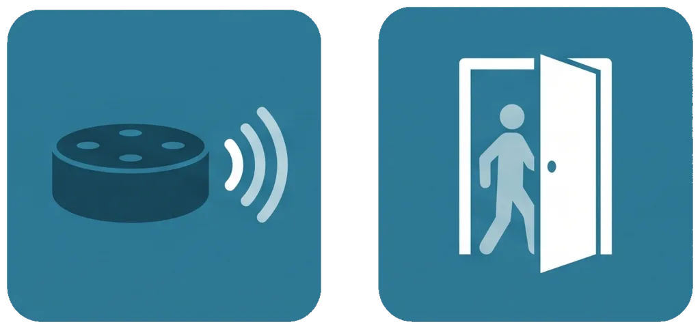

Help & setup guide · updated July 2026
English Deutsch
In short: Tell the skill when something happens — a clock time (“at three thirty”) or a duration (“in ninety minutes”) — and it speaks a series of countdown announcements on your Echo, for example 60, 45, 30, 15 and 5 minutes before, plus a final “it’s time”. The intervals and the wording are yours to customize. It needs the Reminders permission, granted once in the Alexa app.
“Time To Something” is a countdown announcer. The classic use is getting a household out the door on time: you set a departure, and every so often Alexa says how long is left — “Time to departure: 30 minutes” — ending with “It’s time! Departure — now!” But it works for anything with a deadline: dinner, bedtime, catching the bus, the start of a meeting.
Each announcement is delivered as an Alexa reminder, so it plays at the scheduled moment even though the skill isn’t “running” in between.
By default a reminder is announced only on the Echo it was created on. To hear the countdown throughout the house, tell Alexa which devices should announce reminders — set once, in the Alexa app:
If you have more than one Echo, Alexa usually creates a group called Everywhere for you. Choose it under Announce on device and every Echo announces. Nothing else to set up.
To announce in a chosen set of rooms instead of everywhere, note that Announce on device only lists multi-room music groups — an ordinary room or device group does not appear there. Create one first:
Do not start the countdown separately in each room. Every countdown you start schedules its own set of reminders, and once reminders announce on a group each set plays everywhere — so two countdowns means hearing each announcement twice. Start it once and let the group do the rest. (“Cancel the countdown” always clears every one of them.)
Two ways to begin:
Alexa, ask time to something to… followed by a command below.Alexa, open time to something — then just speak the command. Easier for longer phrases.By clock time:
we are leaving at three thirty
start a countdown to dinner at six
countdown to half past two
the meeting is at nine fifteen
By duration (how long from now):
we are leaving in ninety minutes
start a countdown for forty five minutes
dinner is in two hours
we have forty minutes until the bus
Or just say start and the skill will ask you for the time. Clock times and
durations are interchangeable, and any announcement points that already passed are dropped
automatically. Countdowns can be up to 24 hours ahead.
For a one-off reminder rather than a whole series:
announce in thirty minutes
remind me in twenty minutes
in ten minutes say get in the car
say the bus is coming in fifteen minutes
These save as your personal defaults for future countdowns.
use intervals sixty thirty ten and five
announce every fifteen minutes starting sixty minutes before
announce at thirty twenty and ten minutes before
You can set up to 12 announcement points. Ask for more than fit and the skill keeps the ones nearest the event and tells you it trimmed the list.
set the announcement to time to get moving
set the final announcement to everybody out the door
For the countdown announcement, the minutes left are added automatically after your text.
status · how long is left · how long until dinner
cancel the countdown · stop the countdown
list my settings · reset my settings
If you never customize anything: announcements at 60, 45, 30, 15 and 5 minutes before, plus a final one; event name “departure”; wording “Time to {event}: {minutes} minutes.”
Who is responsible. This skill is an independent, personal project by its developer, who is the data controller for the limited data described here. Contact: sveinungsvea@gmail.com.
What is stored, and why. To provide the countdowns you ask for, the skill stores your announcement settings (intervals and wording), the countdowns you schedule together with the identifiers of the reminders it creates for them, and your device’s time zone (used only to work out when a clock time falls). This is tied to your Amazon account and the Echo you use it on. No name, email, address, contacts, or location beyond the device time zone is collected.
Where it lives, and what it talks to. The data is held in the skill’s own storage on Amazon’s Alexa-hosted infrastructure. The skill runs no server of its own and makes no other outbound connections — it uses Alexa’s Reminders service only, to schedule and cancel your announcements, and processes the data solely to operate the skill for you.
Not shared. Nothing is sold, shared with third parties, or used for advertising or profiling. The skill is not directed to children.
How long it is kept, and your control. Settings and scheduled countdowns are kept until you change or remove them. Say “reset my settings” to clear your saved defaults, or “cancel the countdown” to remove scheduled announcements. Disabling the skill in the Alexa app revokes its access to Reminders and stops further storage. To ask about or request deletion of any data held for you, contact the developer at the address above.
Your rights. Depending on where you live (including the EU/EEA under the GDPR and the UK), you may have the right to access, correct, or delete your data, or to object to or restrict its processing. Use the voice commands above, or contact the developer to exercise these rights.
This skill is provided as-is, for personal and household use, without warranty. It is not affiliated with Amazon. Last updated: July 2026.
Hilfe & Einrichtung · aktualisiert Juli 2026
English Deutsch
Kurz gesagt: Sag dem Skill, wann etwas ansteht — als Uhrzeit (“um fünfzehn Uhr dreißig”) oder als Dauer (“in neunzig Minuten”) — und er sagt auf deinem Echo einen Countdown an, zum Beispiel 60, 45, 30, 15 und 5 Minuten vorher, plus eine finale Ansage. Intervalle und Text sind frei anpassbar. Er benötigt die Erinnerungen-Berechtigung, die du einmalig in der Alexa-App erteilst.
“Time To Something” sagt Countdowns an. Der Klassiker: die Familie rechtzeitig aus dem Haus bekommen. Du legst eine Abfahrt fest, und Alexa sagt in Abständen, wie viel Zeit bleibt — “Noch 30 Minuten — Abfahrt” — und zum Schluss “Es ist soweit! Abfahrt — jetzt!” Funktioniert für alles mit einem festen Zeitpunkt: Abendessen, Schlafenszeit, den Bus erwischen, Beginn eines Termins.
Jede Ansage wird als Alexa-Erinnerung zugestellt, spielt also zum geplanten Zeitpunkt, auch wenn der Skill zwischendurch nicht “läuft”.
Standardmäßig wird eine Erinnerung nur auf dem Echo angesagt, auf dem sie erstellt wurde. Damit der Countdown im ganzen Haus zu hören ist, lege einmalig in der Alexa-App fest, welche Geräte Erinnerungen ansagen:
Bei mehreren Echos erstellt Alexa meist automatisch eine Gruppe namens Überall. Wähle sie aus, und jedes Echo sagt an. Mehr ist nicht nötig.
Für eine bestimmte Auswahl an Räumen statt überall zeigt diese Einstellung nur Multiroom-Musik-Gruppen an — eine normale Raum- oder Gerätegruppe erscheint dort nicht. Lege zuerst eine an:
Starte den Countdown nicht in jedem Raum einzeln. Jeder gestartete Countdown plant eigene Erinnerungen, und sobald Erinnerungen auf einer Gruppe ansagen, spielt jede davon überall — zwei Countdowns bedeuten also jede Ansage doppelt. Einmal starten und die Gruppe den Rest erledigen lassen. (“Countdown abbrechen” löscht immer alle.)
Zwei Wege zu beginnen:
Alexa, frage time to something … gefolgt von einem Befehl.Alexa, öffne time to something — dann einfach den Befehl sprechen. Praktischer für längere Sätze.Per Uhrzeit:
wir fahren um fünfzehn Uhr dreißig los
starte einen Countdown zum Abendessen um achtzehn Uhr
Countdown bis halb drei
Per Dauer (ab jetzt):
wir fahren in neunzig Minuten los
starte einen Countdown für fünfundvierzig Minuten
das Abendessen ist in zwei Stunden
Oder sag einfach Start, und der Skill fragt nach der Zeit. Uhrzeit und Dauer sind
austauschbar; bereits vergangene Ansagepunkte werden automatisch weggelassen. Countdowns
reichen bis 24 Stunden voraus.
melde dich in dreißig Minuten
in zehn Minuten sag steigt ins Auto
sag der Bus kommt in fünfzehn Minuten
Diese werden als deine persönlichen Standardwerte gespeichert.
nutze Intervalle sechzig dreißig zehn und fünf
melde dich alle fünfzehn Minuten ab sechzig Minuten vorher
Bis zu 12 Ansagepunkte sind möglich. Bei zu vielen behält der Skill die dem Ereignis nächsten und sagt dir, dass er gekürzt hat.
setze die Ansage auf Zeit loszukommen
setze die letzte Ansage auf alle raus jetzt
Bei der Countdown-Ansage werden die verbleibenden Minuten automatisch an deinen Text angehängt.
Status · wie lange noch
Countdown abbrechen
liste meine Einstellungen auf · Einstellungen zurücksetzen
Ohne Anpassung: Ansagen 60, 45, 30, 15 und 5 Minuten vorher, plus eine finale; Ereignisname “Abfahrt”; Text “Noch {Minuten} — {Ereignis}.”
Verantwortlich. Dieser Skill ist ein unabhängiges, privates Projekt des Entwicklers, der für die hier beschriebenen begrenzten Daten verantwortlich ist (Data Controller). Kontakt: sveinungsvea@gmail.com.
Was gespeichert wird und warum. Um die von dir angeforderten Countdowns bereitzustellen, speichert der Skill deine Ansage-Einstellungen (Intervalle und Text), die von dir geplanten Countdowns samt den Kennungen der dafür erstellten Erinnerungen und die Zeitzone deines Geräts (nur um zu berechnen, wann eine Uhrzeit eintritt). Dies ist mit deinem Amazon-Konto und dem genutzten Echo verknüpft. Es werden kein Name, keine E-Mail-Adresse, keine Anschrift, keine Kontakte und kein Standort über die Gerätezeitzone hinaus erfasst.
Wo die Daten liegen und womit kommuniziert wird. Die Daten liegen im eigenen Speicher des Skills auf der Alexa-Hosted-Infrastruktur von Amazon. Der Skill betreibt keinen eigenen Server und baut keine weiteren ausgehenden Verbindungen auf — er nutzt nur den Erinnerungen-Dienst von Alexa, um deine Ansagen zu planen und abzubrechen, und verarbeitet die Daten ausschließlich zum Betrieb des Skills für dich.
Keine Weitergabe. Nichts wird verkauft, an Dritte weitergegeben oder für Werbung oder Profiling genutzt. Der Skill richtet sich nicht an Kinder.
Speicherdauer und deine Kontrolle. Einstellungen und geplante Countdowns werden gespeichert, bis du sie änderst oder entfernst. Sag “Einstellungen zurücksetzen”, um deine gespeicherten Standardwerte zu löschen, oder “Countdown abbrechen”, um geplante Ansagen zu entfernen. Wenn du den Skill in der Alexa-App deaktivierst, entziehst du ihm den Zugriff auf Erinnerungen und beendest die weitere Speicherung. Für Auskunft oder Löschung wende dich an die oben genannte Adresse.
Deine Rechte. Je nach Wohnort (einschließlich der EU/des EWR nach der DSGVO) hast du möglicherweise das Recht auf Auskunft, Berichtigung oder Löschung deiner Daten sowie auf Widerspruch oder Einschränkung der Verarbeitung. Nutze die obigen Sprachbefehle oder wende dich an den Entwickler.
Dieser Skill wird ohne Gewähr für den persönlichen und häuslichen Gebrauch bereitgestellt. Er steht in keiner Verbindung zu Amazon. Zuletzt aktualisiert: Juli 2026.